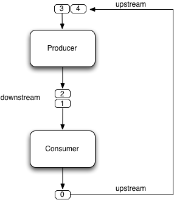
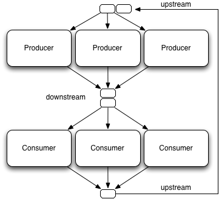

KanbanFlow
==========
A pattern for controlling dataflow
in concurrent producer-consumer scenarios
version 1.0, Sept. 17th 2011
version 1.1, Oct. 7th 2020 (move location, add usages)
by Dierk König
As to my best knowledge, such a pattern has not been published before.
Anyone who comes across an earlier publication please send me note.
The KanbanFlow pattern offers a coordination scheme for the classical producer-consumer scenario where one or many producers create products that are to be consumed by one or many consumers. Producers and consumers work concurrently and have no direct dependency. Their sole mean of interaction is through dataflows.
Context
-------
An object-oriented software development environment with support for concurrent execution such as Java or Groovy. The availability of multiple independent processing resources such as multiple cores makes the pattern even more appealing but is not required. The pattern also applies when using other programming approaches such as dataflow programming, functional programming, and actor-based programming.
Problem statement
-----------------
In order to coordinate producers and consumers, we require that
a) consumers wait for products to be delivered,
b) producers don't overuse resources in case of production being faster than consumption,
c) we get simple means of controlling the amount of concurrency, and
d) products can be consumed in a steady flow at an optimal rate.
Requirement a) is automatically met when producers send their products to the consumers via dataflow queues since they block consumers until a product is available.
Requirement b) is more difficult. Imagine that producers are a 100 times faster than consumers. Such a situation can easily arise if production means fast calculation and consumption means writing calculated results (the "product") to a comparably slow device.
If producers and consumers run uncoordinated at maximum speed, for every consumed product there are 99 products waiting in the dataflow queue. The queue will rapidly fill up and will eventually exhaust all memory.
Furthermore, producers exhaust all calculation capacity very early in the process, unnecessarily compromising the machine's responsiveness.
We overuse both, memory and processing time. In general, we overuse system resources.
Requirement c) is the trickiest one since one cannot give hard numbers for "simplicity" and not even for the "amount of concurrency". We have no choice but leaving the valuation of simplicity to everyone's personal taste. For ourselves, we will judge a system simpler that can be controlled by a single number over one that requires reorganizing datastructures and dependencies.
Requirement d) suggests that we prefer continuous delivery over first waiting before finally getting all products at once. But this feature shall not compromise the overall throughput. Therefore we require an optimal rate of products being consumed per time unit.
Forces
------
Classical means of synchronizing producers and consumers involve data structures that block producers when they try to put a product in the dataflow queue but the queue has reached its maximum capacity. One possible example is a synchronous dataflow queue, which essentially has a blocking queue that can hold at most one product. This covers requirements a) and b).
Such an explicit synchronization requires careful setup and parametrization as soon as you have multiple producers and consumers and possibly a whole chain of those. You can take an industrial assembly line as an analogy.
You either need to ensure that all operations happen at the exact same rate (heartbeat) or you need carefully dimensioned buffers to serve as intermediate stores to cope for variations in processing time (the so-called jitter). Without these considerations, the throughput suffers since waiting time is propagated back "upstream" blocking multiple processing units. You are not always making the best progress towards the next consumed product.
For "optimizing the whole" (as the lean production movement calls it) or simply adapting to new production steps or more/less production units one has to carefully re-wire the units with their queues along with reconsidering the buffer sizes.
Synchronization also generally opens the possibility for deadlocks and a single processing unit can block the whole system.
Solution idea
-------------
The manufacturing industry has widely adopted the principles of "lean" production. One of the core principles is to limit the "work in progress" (WIP), i.e. avoid unfinished products in the system, especially in buffers. Without buffers, a product is made "just in time" for consumption. The goal is to optimize the "lead time", which maps in our context to the mean time for producing and consuming a product.
To this end, manufacturers (and since recently also software developers) make use of Kanban cards. The rules as adapted to our needs are as follows:
- Whenever a consumer is ready to receive a product he sends such a card to the producer.
- Whenever a producer receives a card, he produces and sends the product along with the card to the consumer.
- The number of cards is limited. In fact, this number is the maximum WIP.
Figure 1 shows such a scenario with one producer and one consumer. The producer sends cards and products "downstream" to the consumer. The consumer sends cards back "upstream". Both "upstream" and "downstream" are dataflow queues.
Figure 1, KanbanFlow with in single-producer single-consumer scenario:

You may have observed that there is only one queue from producer to consumer, even though two pieces of information are sent (card and product). Using two different dataflow queues works perfectly fine in this simple scenario but it is more convenient to only have one queue when it comes to multiple producers and consumers as we will see in a minute.
Meanwhile, we send cards and products by putting them in trays as used when going through airport security. The card is permanently attached to the tray while products are placed inside the tray by the producer and emptied by the consumer. As suggested by figure 2, the consumer sends empty trays back upstream.
Figure 2, Empty trays are brought back upstream:
The construction can easily be generalized into longer chains or multiple producers and consumers. Figure 3 depicts the situation with three producers and three consumers. Three producers can mean three different objects each running in its own thread or more conveniently one producer object being used by three concurrent threads. The same applies to consumers.
Figure 3, KanbanFlow with multiple producers and consumers:

An animated movie (30s) of this scenario is under kanban-3-3-6.mov (currently unavailable) and a more extensive screencast (4:40) showing many different options is under kanban-simulation.mov (currently unavailable).
Example implementation
----------------------
Here is an example implementation using Groovy and dataflow abstractions from the excellent GPars library by Vaclav Pech. (source also at github, groovy 1.8.2, gpars 0.11)
When running, you will see output like
...
[0:983] [1:984] [5:985] 0:983 [2:986] [4:987] [3:988]
[0:989] 1:984 2:986 5:985 4:987 3:988 [1:990] [2:991] 0:989 [5:992] 1:990 5:992 2:991 [4:993] 4:993 [1:994] [3:995]
[0:996] [5:997] 1:994 3:995 [4:998] [2:999] 0:996 [1:1000] 5:997 4:998 1:1000 2:999
telling you that a producer got the tray with card #0 and placed product number 983 in it.
Then trays #1 and #5 were filled before a consumer got tray #0 and consumed product 983.
Notice that the association of card and products always remains stable since they ride in the same tray. In fact, this feature is optional. The system would work fine with products and cards being mixed but then the output becomes harder to understand.
However, trays are not necessarily used for production or consumption in any foreseeable order. The only guarantee is that once a product is put inside a tray, this tray cannot be filled a second time before it is emptied by a consumer.
The heart of the example is
// producer
operator prodWiring, { tray ->
tray.product = prod
downstream << tray
}
def consumer = operator consWiring, { tray ->
tray.product == null // optional, just for the sake of clarity
upstream << tray
}
Producer and consumer being dataflow operators they exclusively receive one tray at a time.
The rest of the example code is for setting up, making products concurrently, and stopping after soMany products making sure they have all been consumed.
One can easily play around with various scenarios by changing the maxForks parameters or the wip.
Resulting context
-----------------
Since the WIP, i.e. the number of trays/cards in the system, never changes, the upper limit for any queue in the system is the WIP. In our example, no queue will ever become larger than 6 entries.
As a direct consequence, queues never overflow their capacity and we never block when writing to a queue. The coordination scheme cannot produce deadlocks and allows efficient implementations.
Every processing unit can make progress when it has a tray available. So in average, we do not need more trays than we have processing units (number of producers plus number of consumers). In a system without bottlenecks, the average size of any queue is 0.5 since any tray is either in processing or about to be fetched next.
When there are bottlenecks in the system, trays pile up before the bottleneck and downstream queues empty out. That means no waiting time downstream and we are still progressing at maximum speed that the system allows.
Any given system is easily controlled by only one parameter: the WIP. Let's take the single-producer, single-consumer scenario as an example.
- WIP = 0 : no progress, system halts
- WIP = 1 : sequential execution, no concurrency
- WIP = 2 : producer produces while consumer consumes, maximum throughput
- WIP > 2 : does not enhance throughput but wastes memory
Now let's consider a slow consumer that takes twice as long as a producer. The consumer becomes the bottleneck and we proceed at his maximum speed since whenever he is finished with a tray, the next one is readily available. Increasing the WIP does not help. The network does not allow a higher throughput.
In that case we need to modify the system to include two consumers and a WIP of three to be balanced. Even this modification is easily achieved by changing the maxForks parameter.
In order to balance the system
let #p be the number of producers > 0,
let #c be the number of consumers > 0,
let tp the average time for production, and
let tc the average time for consumption.
The system is balanced when
#c / #p = tc / tp
wip = #p + #c
assuming that all processing units can proceed concurrently without resource restrictions beyond the KanbanFlow coordination scheme.
In a multiple-producer, multiple-consumer scenario the system will never stop making progress because of a single processing unit being stalled. Only if all producers or all consumers stall at the same time, the flow is stopped.
KanbanFlow is a composable pattern. KanbanFlows can be chained.
If the system is made up of dataflow queues and dataflow operators, access to a tray is always safe. Access to any shared mutable state outside the items being passed through dataflows needs the same consideration as with any concurrent access. Examples are implicit synchronization when printing to System.out and incrementing the product number through an AtomicInteger variable.
Known usages
------------
KanbanFlow has been used in experimental settings in academia and
for the OpenDolphin JavaFX and JavaScript clients.
See for example the kanbanflow animation project.
Related work
------------
KanbanFlow makes use of various dataflow abstractions.
Its automatic throttling of the producer can be compared to
the "back-pressure" as used in reactive streams.